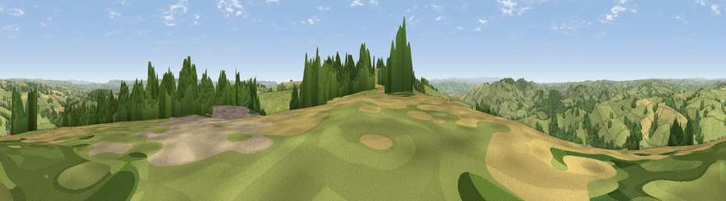

Viewpoint near Butterleigh
#6682 in England · top 7% of its area beats it · near ButterleighWhere it is
The exact computed spot (SS 96575 06288). Click the marker for map links.
The view, rendered

A 360° render of this exact spot computed from the terrain model, tree cover and land cover — summer colours, afternoon light, calibrated against photographs of famous viewpoints. Real trees, hedges and buildings will differ in detail.
The panorama
Grey silhouette: terrain skyline in each direction (720 bearings, Earth curvature and refraction included). Dashed green: skyline with trees (+15 m) and buildings (+8 m) as obstacles. Blue strip: how far the ground is visible on each bearing.
Where the view opens
Wedge length = distance to the farthest visible ground on that bearing (vegetation-aware). Rings at 10, 25 and 50 km.
What fills the view
68% grassland · 18% woodland · 13% cropland ·
Angular shares of the visible panorama (visual magnitude), not map area. Landscape diversity 0.38 (0–1 Shannon).
Key numbers
More beautiful places nearby
The staircase of upgrades: each row has a higher view potential than everything closer. Driving times are estimates from straight-line distance, calibrated against real road routing — check an actual route before setting out.
| Place | Direction | Drive | Score |
|---|---|---|---|
| Viewpoint near Silverton | SSW · 1 km | ~3 min | 73.9 |
| Viewpoint near Bradninch | SSE · 2 km | ~6 min | 77.7 |
| Raddon Hills | WSW · 7 km | ~15 min | 78.2 |
| Viewpoint near Stockleigh Pomeroy | WSW · 8 km | ~16 min | 78.9 |
| Viewpoint near Whitestone | SW · 15 km | ~27 min | 79.8 |
| Viewpoint near Tipton St John | SE · 21 km | ~35 min | 81.5 |
| Viewpoint near Colaton Raleigh | SE · 23 km | ~38 min | 82.1 |
| Viewpoint near Sidmouth | SE · 24 km | ~39 min | 83.0 |
50.84683, -3.47046 · source: screening · position refined by local search. Computed location — check access rights before visiting.